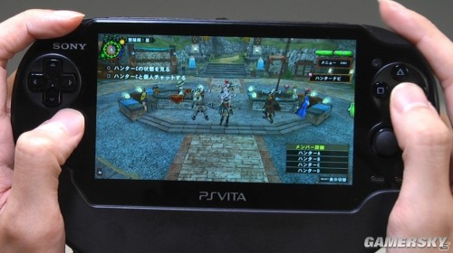
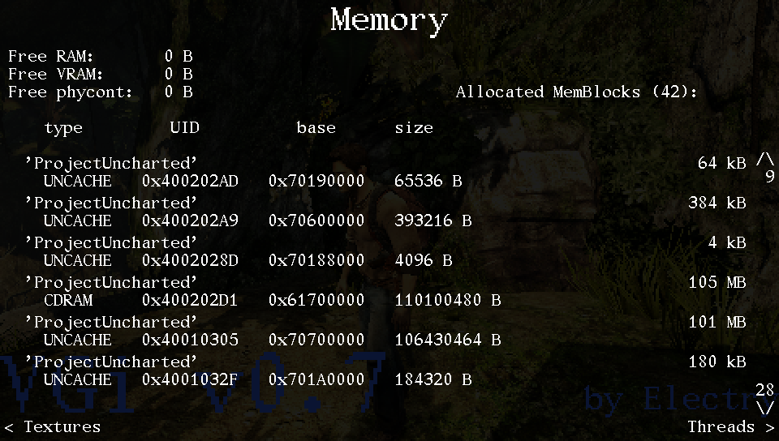
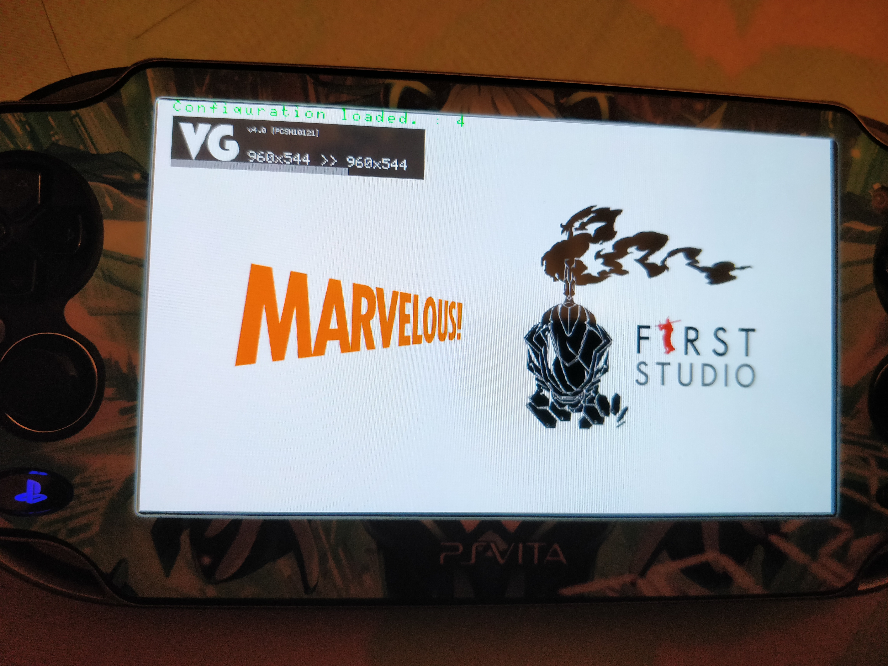

PSV游戏高清化
PSV游戏机之所以暴死，不仅游戏阵容的不行、销量低于nds和3ds,主要还有那糟糕的分辨率和锯齿。然而PSV发售之前，官方明确有960ⅹ544的分辨率，但发售后仅有720以下(惨)。

然而在PSV破解后几年外国大神Electry破解了机子内存配置，第一个实现PSV高清化。只要加入一串代码即可高清化


之后Electry大神把破解方法无偿分享,psvita破解吧吧友们相继实现多部作品的高清化,使曾经暴死的PSV焕发生机。
然而并不是所有游戏能实现高清化,有些游戏在实现高清化有着严重的bus,高清化是个漫长的过程。